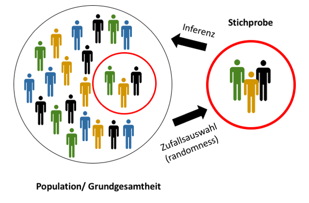

Lineare Regression
Simon Roth
2017-11-13
1 Einstieg
1.1 Desired Features
- Bootstrap as ideal inference
- brms Meta analysis
1.2 Installation von R/ RStudio
R ist eine Programmiersprache, speziell entwickelt für Statistik. Die Software ist komplett kostenlos und wird unter einer GPL (GNU General Public License) zugänglich gemacht.
We believe free and open source data analysis software is a foundation for innovative and important work in science, education, and industry (RStudio Homepage).
Das R Statistiksoftware kann hier heruntergeladen werden. R kann man sich als Motor vorstellen, nun braucht man noch ein Cockpit. Dazu greift man auf RStudio zurück, eine Software die die Arbeit mit R sehr erleichtert. Eine IDE (Integrated Development Enviroment) wie Rstudio bietet tools wie Syntax Highlighting, Auto-Vervollständigung und bessere Übersicht über Grafiken, Packages und Datensätze.
1.3 Wie R Lernen?
Der richtige Einstieg in R ist entscheidend für die Meisten, auch weiterhin damit zu arbeiten. Daher empfehlen Dozenten das tidyverse anstelle von base R zu unterrichten/ lernen. Das Package dplyr z.B. revolutioniert die Datenbearbeitung durch eine einfache und damit menschen-leserliche Syntax. Darauf aufbauend kann mit ggplot2 jeglicher Visualisierungswunsch in Minuten publikationsfertig präsentiert werden.

Hier werden Materialien aus dem tidyverse verlinkt:
- A Nice Introduction to ggplot2
- Introduction and Data Management
- Data wrangling with dplyr and tidyr slides
- statistics bookdown
- Große Einführung in ggplot2
1.4 Wozu Statistik?
Statistics is the grammar of science - Karl Pearson
- In den Sozialwissenschaften werden statistische Analysen eingesetzt um Theorien empirisch zu untersuchen. Dabei werden theoretische Zusammenhänge in Form von Hypothesen (X beeinflusst Y) anhand von Daten getestet (Kausalanalyse).
- Unzählige neue Methoden wurden entwickelt um Vorhersagen aufgrund statistischer Modelle zu treffen. Dabei wird in einem ersten Schritt die Assoziation zwischen X und Y modelliert. Dann folgt die Vorhersage von Y aufgrund neuer X-Observationen.
1.5 Reserach Design
- Testbare Hypothesen aus einem theoretischen Konstrukt ableiten
- statistisches Modell und/oder Methoden auswählen
- Datenbeschaffung
- selber erheben (Survey)
- externe Daten
- Datentransformation
- deskriptive Tabellen/Visualisierung der Variablen
- Imputation
- Faktorenanlyse
- Mit den Daten das theoretische Modell schätzen (Hypothesen testen)
- Modellauswahl
- Parameter und Hypothesentest präsentieren
- Residuenanalyse
- Auswerten und Schlußfolgerungen ziehen
